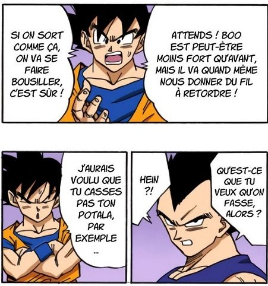

Dans les discussions autour de l'arc Boo, une affirmation revient avec insistance : Kid Buu serait le Buu le plus puissant. L'argument repose généralement sur une intuition narrative — le combat final oppose Kid Buu à Goku, donc Kid Buu est forcément l'adversaire ultime.
La dragonballologie ne travaille pas avec des intuitions. Elle travaille avec ce que le manga montre. Et ce que le manga montre, à travers le comportement des personnages et les preuves textuelles, est sans ambiguïté : Super Buu dépasse largement Kid Buu en puissance.
Cet article démontre cette hiérarchie. Deux questions connexes feront l'objet d'articles séparés : les particularités du combat Goku vs Gros Buu, et l'incohérence narrative de l'apparition de Kid Buu.
Partie I
Le plafond de Goku SSJ3
face à Gros Buu
Quand Goku en Super Saiyan 3 affronte Gros Buu, le combat est équilibré. Aucun des deux ne prend l'avantage décisif. Gros Buu encaisse, régénère, et copie les techniques de Goku en temps réel.

Goku ne peut pas tuer Buu dans ces conditions. La régénération de Buu exige une destruction totale, et produire une telle puissance en une seule frappe excède ses capacités. Il redevient simplement normal.

À cette limite de puissance s'ajoute une contrainte physique que Goku formule lui-même :

C'est dans ce contexte que Piccolo lui pose la question directement.

« Je pense pas avoir pu être en mesure de gagner… Ben je sais pas trop… La puissance de Majin Boo est vraiment démesurée… » — Piccolo, puis Goku
C'est une évaluation faite sous contrainte réelle, à chaud, par le principal concerné. Ce n'est pas de la fausse modestie — c'est notre ancre de référence pour calibrer le niveau de Goku SSJ3.
Partie II
Super Buu : une menace
structurellement hors de portée
Le passage de Gros Buu à Super Buu marque un saut qualitatif que la narration ne proclame pas — elle le démontre, à travers trois preuves indépendantes qui convergent vers la même conclusion.
2.1 — L'argument comportemental
Preuve primaireGoku est ressuscité. Il a tout le temps de combattre. Pourtant, il ne tente jamais d'affronter Super Buu — sous aucune de ses formes. Ni Buucolo, ni Super Buu de base. Un personnage qui cherche systématiquement à se mesurer aux adversaires les plus forts ne fait aucune tentative.

Il ne teste pas. Il s'écarte, et estime que Gohan peut s'en sortir seul. Plus tôt dans l'arc, il a même dit à Piccolo qu'il avait annoncé à Gros Buu l'arrivée d'un combattant bien plus fort que lui.

Le comportement d'un personnage est une preuve primaire. On ne peut pas invoquer une déclaration ultérieure pour contredire ce qu'un comportement établit avec constance sur plusieurs dizaines de chapitres.
2.2 — La fusion comme condition sine qua non
À l'intérieur du corps de Buu, quand la question de sortir se pose, la seule option que Goku envisage est la fusion Potala. Pas le Super Saiyan 3. Pas Goku et Vegeta ensemble. La fusion Potala — Végetto.

Goku insiste pour que Vegeta conserve le Potala. Quand Vegeta refuse par principe de se battre en duo fusionné :

Puis vient le moment décisif. À l'intérieur du corps de Buu, Goku tente encore une fois de planifier la fusion pour la sortie :


Cette réaction dit tout. Sans la fusion, Goku et Vegeta ensemble ne se voient pas en mesure de vaincre Super Buu.
2.3 — La validation définitive

Cette déclaration verrouille la hiérarchie. Végetto > Super Buu. Et par contrecoup : Goku seul — ou Goku + Vegeta sans fusion — est structurellement en dessous de Super Buu.
Les trois preuves convergent vers la même conclusion. Ce n'est pas une coïncidence — c'est la narration qui construit cette réalité de façon cohérente.
Partie III
Kid Buu : un adversaire calibré
pour le combat final
Kid Buu affronte Goku en Super Saiyan 3. Le combat est intense, Goku est mis en difficulté, mais il tient le rythme. Ce niveau de combat est cohérent avec ce que Goku a montré contre Gros Buu.
La question de l'origine précise de Kid Buu — pourquoi cette forme apparaît après les extractions et non une autre forme de Buu — sera traitée dans un article dédié. Ce qui nous intéresse ici, c'est son positionnement narratif : Kid Buu est conçu pour être l'adversaire du combat final, un adversaire que Goku peut affronter.
C'est un calibrage délibéré de Toriyama. L'auteur avait établi depuis le début que les enfants devaient être les héros de l'arc — puis il a dû ajuster quand ce plan a évolué. Kid Buu est la solution narrative : suffisamment fort pour être une menace, mais à la portée de Goku en SSJ3. Pas Super Buu.
Goku lui-même n'a jamais prétendu que Kid Buu était le plus puissant des Buu. La communauté a fait cette inférence seule, à partir du seul fait que Kid Buu est l'adversaire du combat final — ce qui est une confusion entre rôle narratif et niveau de puissance.
Partie IV
La hiérarchie que la narration impose
Le manga n'a jamais affirmé que Kid Buu était plus puissant que Super Buu. Il ne l'a pas dit. Il ne l'a pas montré. Voici ce qu'il a établi :
Hiérarchie établie par les preuves narratives
Kid Buu est une puissance formidable — assez pour mettre Goku en difficulté, assez pour exiger la Genkidama et les énergies de toute la Terre. Mais il ne se situe pas au niveau de Super Buu.
L'affirmer, c'est ignorer ce que le manga a pris soin de démontrer méthodiquement sur plusieurs dizaines de chapitres. C'est confondre le rôle dramatique d'un personnage avec son niveau de puissance. Ce sont deux choses différentes, et les distinguer est précisément ce que la dragonballologie permet de faire.
Certains avancent que les conditions du Kaioshinkai — le lieu du combat contre Kid Buu — seraient différentes de la Terre et expliqueraient des variations de performance. Le manga ne fournit aucune information de ce type. En l'absence de tout élément textuel, cette hypothèse est une extrapolation sans fondement. La dragonballologie ne travaille pas avec ce que le manga n'a pas dit.